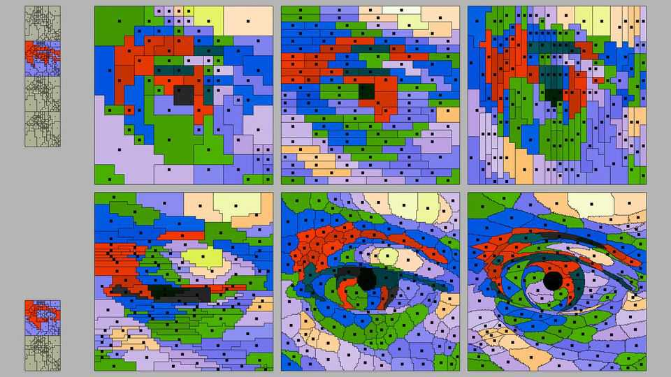

Could more brain-like chips provide a path to consciousness?
Some experts believe computers will need biological aspects to become self-aware
Aug 20th 2026

The current crop of AI models looks to some scientists like a dead end when it comes to consciousness, regardless of how powerful they become. For some, this is because of their lack of wet, biological stuff; for others, because of their design structure. But they do not rule out the potential for consciousness in future versions of AI built either with living cells, or on different, more brain-like, computational architectures.
Modern computers are based on a blueprint invented by John von Neumann, a Hungarian polymath, in 1945. They feature a processing unit (for making calculations) and a memory unit (for storing instructions and data). Information has to zoom back and forth between these units and, for AI applications, the energy requirements can mount up.
Brains do not work this way. Neurons process and store data in the same place, making networks of them much more energy-efficient at computations than their digital-computer equivalents. A typical brain consumes around 20 watts whereas an artificial neural network carrying out an equivalent number of parallel calculations would require a data centre that guzzles millions of watts.
“Neuromorphic” computing aims to be more efficient and brain-like, using devices called memristors to perform computations and store information in the same place. Apply a voltage to a memristor and its conducting properties change; remove that voltage and that change persists, acting as a memory. Such traits make computing far more efficient. But they are, separately, intriguing to some philosophers who believe that it is not computational prowess but the way in which computers “think” that will make it possible for them to become conscious.
Another idea is to use real brain cells. Cortical Labs, an Australian startup, has developed a computer using hundreds of thousands of human neurons (grown from donated stem cells) mounted on silicon. Their “biological computer” has been taught to play “Pong”, a simple computer game, and, in later versions, “Doom”, a first-person shooter game.
Further in the future are neural organoids, three-dimensional clusters of brain cells grown in labs. Though still a relatively new technology, used in labs to understand better how brains grow and behave, they could also one day be used to perform computations. The largest organoids grown in labs today contain more brain cells than there are in a honey bee. They are big enough to potentially develop consciousness, suggests Peter Godfrey-Smith, a philosopher at the University of Sydney who works on animal minds, but they are just not organised in the right way.
The common factor in all these ideas is that they are closer analogues with the human brain (in some cases because they are made of the same stuff) than the digital computers of today.
“How brain-like does AI have to be to move the needle on the credence that it might be conscious?” says Anil Seth, a neuroscientist at the University of Sussex. He believes that silicon, no matter how cleverly it is constructed, probably will not achieve consciousness on its own. “If you start to build systems that share more and more properties with brains, given that we don’t know which of those properties matters, then you’re more likely to move the needle a bit.” ■